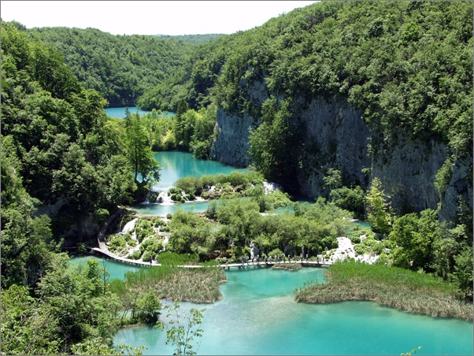
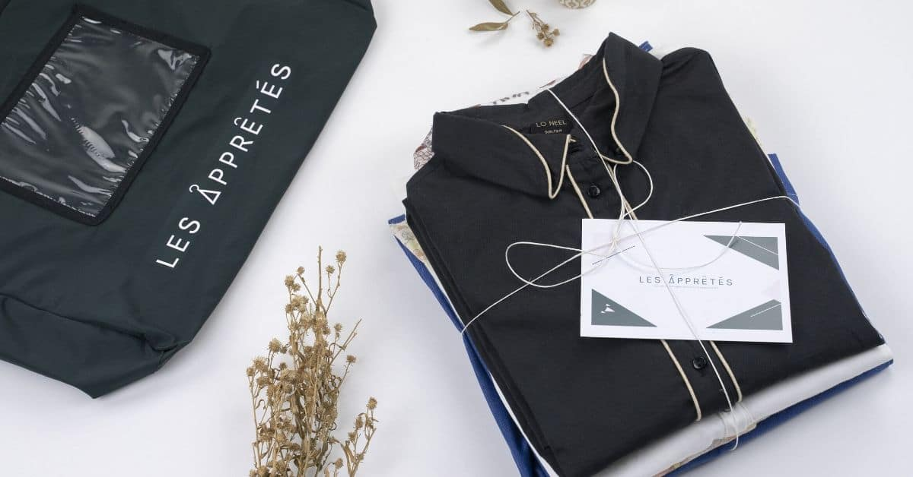
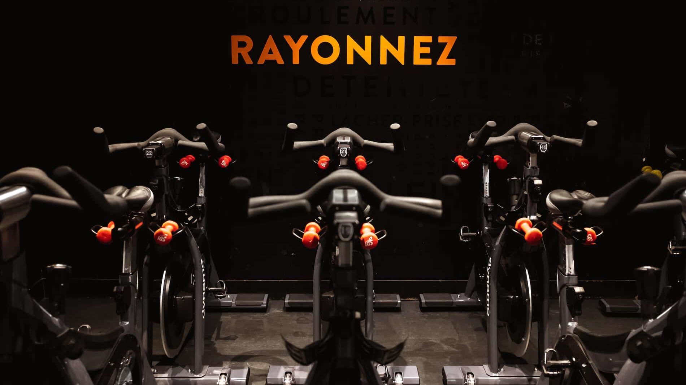

Trips

Whether with friends, family or even alone, I have always loved to travel. I have had the opportunity to visit the United States, India, Morocco, Italy and many other countries with rich and varied cultures.
This taste for travel was a deciding factor in my choice of post-baccalaureate studies. Joining IESEG allowed me to do an exchange year in Zagreb in Croatia as well as a two-month internship in Ireland in Dublin at SCOR (a reinsurrance company). These experiences make me living alone in a foreign country for the first time at the age of 19 which allowed me to develop my curiosity and my ability to adapt very fast.
Fashion

I have always been passionate about fashion. I've been reading Vogue since I was 15. And as a teenager, I loved to take back old clothes from my mother and have them cut to give them a new life: not to lose beautiful materials and simply to bring the clothes up to date.
I took advantage of my internships to be in direct contact with my passion since I did :
- My commercial internship as a saleswoman at l'Eclaireur: a luxury concept store located a few steps from the Place des Victoires in Paris
- My internship as an E-commerce manager at Les Apprêtés: an eco-responsible clothing box rental company
My internship at Les Apprêtés allowed me to learn more about the type of consumption I wanted to adopt. In a world where the textile industry is the second most polluting in the world and where thousands of workers are forced to work in deplorable conditions, I think it's time to move to a more ethical mode of consumption: for the planet as well as for the human being.
Sport

Passionate about sports since childhood, I practiced handball in a club for three years and swimming for five years. Although I no longer play handball, I continue to be an avid supporter of the Paris Saint Germain handball team and the French handball team.
I think that these sports activities allowed me to work on my perseverance, which is an asset in my personal and professional life.
Today, I go to the dynamo cycling gym at least once a week. Dynamo is a sport that revolutionizes indoor cycling by offering a complete workout that connects the body and mind in rhythm with the music: 10% in the legs and 90% in the head! Although very fun, this sport requires a strong mind and a lot of coordination.